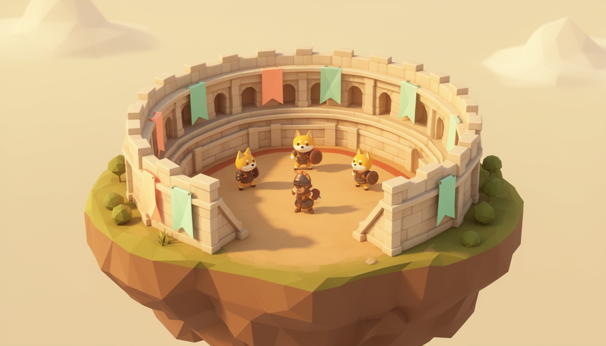

Projects & early adopters
Build a collateral proposal, choose a currency and plan liquidity for your token. Start with a position you can explain to your community.
Create a project planThe International Multicurrency Framework (IMF) helps projects lock tokens as collateral, mint a selected currency token and plan separate DEX liquidity on DogeOS.
An independent extension of Frankencoin mechanics. One independent system per currency. Built for people and agents.

Meet the places in the framework. Select a step to see what moves, what stays locked and what your project manages.
Your project proposes terms or uses accepted terms where cloning is available. Tokens deposited into the position secure its currency debt. They are not sold by the act of depositing.
And the way back? Repay according to the position’s terms, then withdraw eligible collateral. A currency mint creates an obligation your treasury continues to manage.
See the full lifecycleMove the debt slider. Watch gross debt, retained reserve and spendable currency change together.
Assumed reserve: 20% of gross mint. Assumed upfront fee: 1%. These are teaching inputs, not V2 terms or an eligibility assessment.
Gross debt is the full currency amount recorded against a position when it mints. The retained reserve and the upfront fee are part of this gross figure, so the amount that arrives in a wallet is always lower than the gross amount.
Read the borrowing costs guideA share of each mint that stays assigned to the position instead of arriving in the wallet. It backs the currency over time and later reduces the currency needed for full repayment.
Read the reserves and equity guideA one-time fee taken from the gross mint when currency is created. It is separate from the retained reserve and from ongoing interest.
Read the borrowing costs guideA 50,000 gross mint gives this example treasury 39,500 spendable currency units. The full gross mint is not the wallet balance.
Collateral value is an explicit hypothetical assumption, not a price feed or protocol valuation. This model does not set a liquidation trigger. Opening fees, gas and DEX costs are excluded. No conversion between fiat currencies is shown.
Choose a currency to look inside. Each has its own token, equity reserve, minting hub and positions.
USD positions owe K9USD. Selecting another currency explores another system; it does not convert debt or balances.
Open the architecture guideA shared vocabulary for the people building, backing and operating token economies.
Build a collateral proposal, choose a currency and plan liquidity for your token. Start with a position you can explain to your community.
Create a project planReview currency-denominated obligations, prepare transaction plans and coordinate sign-off across treasury operators.
Read the treasury workflowUnderstand how a portfolio project uses collateral, what it owes and how its position changes. Evaluate participation against the mechanism’s actual terms.
Read the mechanism briefUse structured position plans to prepare the same workflows people review in the interface. Keep execution permissions explicit.
Explore agent workflowsConfigure a position in the workspace, then review it as a human-readable summary or export it as structured JSON.
Try agent planningProject teams need clear screens. Agents need clear inputs, boundaries and results. Both start with the same position plan.
The frontend supports local planning and read-only V2 tooling. Live contract state requires a verified deployment registry. Simulation, wallet signing and agent execution are not connected.
Read the integration boundariesStart with the picture. Open the explanation when you’re ready. Each path leads to a fuller guide.

People propose, veto, challenge and bid. Understanding their roles is the next step.
A position is designed to secure its currency debt with collateral. Collateral value can change; the ratio in our model is a teaching assumption, not a guarantee or a live eligibility check.
Read the collateral and debt guideParticipants can challenge a position and take part in the auction process. This replaces an external liquidation price oracle with an economic mechanism that depends on people acting.
Follow a challenge through the mechanismBorrowers propose positions. Qualified governance participants can veto within the applicable window. Challengers and bidders take part under contract rules. V2 deployment choices determine the complete trust model.
Explore roles and decision pointsRetained minter reserves, system equity and spendable currency have different roles. Equity participation carries gains and losses; it is not the same as holding the currency.
Open the reserve and equity mapNo. A new position follows its proposal and veto process, and minting remains subject to its terms and on-chain state. The frontend does not approve collateral.
Tokens locked in a position are collateral. A DEX pair needs a separate token allocation alongside the currency you mint.
Protocol participants assess proposals and can exercise veto rights where qualified. The interface presents information and actions; it does not certify projects or DEX liquidity.
The app includes read-only V2 tooling, but no verified V2 deployment registry is currently configured. You can model a position, save a draft on this device and export a plan. It does not simulate, sign or broadcast transactions.
Start with a plan your team can review.